▲ 바다를 끼고 산자락을 도는 욕지도 해안일주도로 ⓒ 한국관광공사 · 공공누리 제1유형
"욕지도에 차를 싣고 들어가면 배 시간은 어떻게 짜고, 돈은 얼마나 들까?" 이 글은 2026년 10월 17일 현재 영동해운 공식 누리집과 한국관광공사·모노레일 공식 예약 사이트에서 확인한 내용으로 답한다. 삼덕항에서 욕지도까지는 시간표상 55분(06:45 출발, 07:40 도착)이고, 승용차 선적은 편도 25,000원, 어른 승선은 편도 8,600원이다.
다만 섬 관광의 상징처럼 소개돼 온 욕지도 모노레일은 지금 운행하지 않는다. 영동해운 운항시간·요금 바로가기
💡 먼저 결론
차를 가져가려면 삼덕항(영동해운)이 직항 노선이다. 어른 2명과 승용차 1대의 왕복 비용은 공식 요금표 기준 84,400원(17,200×2 + 25,000×2)이다. 모노레일은 공식 예약 사이트에 "별도 공지시까지 임시휴장"이라고 올라 있어 일정에 넣으면 안 된다. 섬 안 마을버스는 한국관광공사 안내(2020~2021년 기준)에 요금 1,000원이라고만 나와 있고, 최신 공식 시간표·렌터카·전동카·섬 안 주유소는 확인하지 못했다.
1. 삼덕항 여객선 시간표 — 하루 7항차, 첫 배 06:45
영동해운은 통영시 산양읍 원항1길 3(삼덕항)에서 욕지도를 잇는 카페리 여객선사다. 공식 시간표 표에는 출발지가 "당포"로 적혀 있지만 같은 사이트의 주소와 안내는 삼덕항이다. 소요 시간은 표에 적힌 출발·도착 시각의 차이인 55분이다.
| 항차 | 삼덕(당포) 출발 | 욕지 도착 | 욕지 출발 | 삼덕(당포) 도착 | 선박 |
|---|---|---|---|---|---|
| 1 | 06:45 | 07:40 | 08:00 | 08:55 | 욕지영동크리스탈호 |
| 2 | 08:30 | 09:25 | 09:40 | 10:35 | 욕지영동골드고속호 |
| 3 | 10:00 | 10:55 | 11:30 | 12:25 | 욕지영동크리스탈호 |
| 4 | 11:00 | 11:55 | 12:30 | 13:25 | 욕지영동골드고속호 |
| 5 | 13:00 | 13:55 | 14:15 | 15:10 | 욕지영동크리스탈호 |
| 6 | 14:00 | 14:55 | 15:30 | 16:25 | 욕지영동골드고속호 |
| 7 | 15:30 | 16:25 | 16:35 | 17:30 | 욕지영동크리스탈호 |
공식 표는 "일정에 따라 운항선박은 변경될 수 있다"고 안내한다. 별도 문구로 "26.08.10일 기준: 욕지영동크리스탈호 토·일·월은 2·4·6항차 운항"이라고 적어 두었으니, 주말·월요일에는 표의 선박 배정이 달라질 수 있다.
피서철·명절 같은 특별 수송기간에는 시간표가 따로 적용되고 운임이 10% 할증된다. 2026-10-17 확인 시점의 공식 시간표 페이지에는 "하계 피서철(7월 25일~8월 9일)" 8항차표와 위 "8월 10일부터" 7항차표만 있었고, 별도의 동절기 시간표는 게시돼 있지 않았다. 겨울에 가려면 출발 직전에 다시 확인하자.
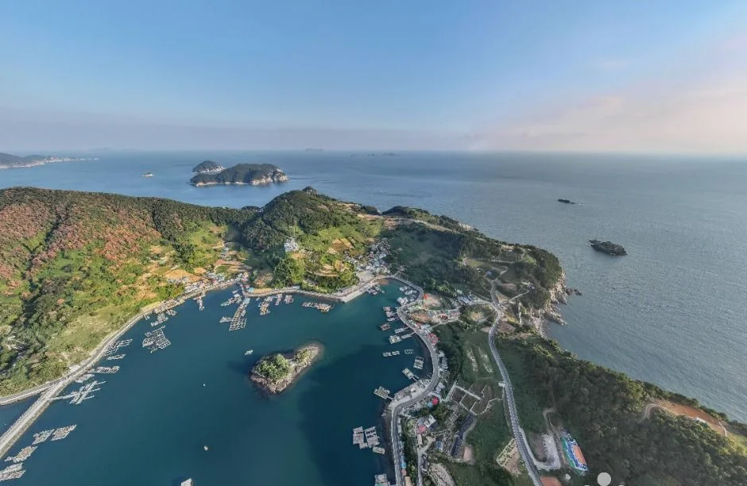
▲ 방파제와 선박이 모인 항구와 해안을 내려다본 항공 사진(한국관광공사 '욕지도해안일주도로' 사진 묶음에 실린 컷으로, 항구 이름은 원 자료에 없다) ⓒ 한국관광공사 · 공공누리 제1유형
당일치기라면 3항차(10:00 출발)로 들어가 7항차(욕지 16:35 출발)로 나오는 조합이 섬 체류 5시간 40분으로 무리가 없다. 더 길게 보려면 2항차(08:30)로 들어가 같은 7항차로 나오면 7시간 이상이다. 마지막 배는 욕지 16:35 출발이라 이 배를 놓으면 1박이 된다.
2. 승선 요금·차량 선적 운임 — 승용차 편도 25,000원
영동해운은 2026년 7월 1일부터 운임을 올린다고 6월 24일 공지했다. 공지는 "20년 만의 조정"이라고 밝혔고, 요금표의 어른 8,600원·승용 25,000원이 이 공지와 일치한다. 요금 인상 공지 바로가기
| 구분 | 편도 | 왕복 |
|---|---|---|
| 대인 | 8,600 | 17,200 |
| 만 65세 이상·중고등학생 | 6,900 | 13,800 |
| 36개월 이상~초등학생 | 4,300 | 8,600 |
| 20인 이상 단체 | 7,700 | 15,400 |
| 36개월 미만 유아 | 무임 | 무임 |
| 통영시민 | 50% 할인 | 현장·전화 구매 시 적용(온라인 불가) |
| 차종 | 운임 | 비고 |
|---|---|---|
| 경차 | 21,000 | 모닝·레이·캐스퍼 등 |
| 승용차(7인승까지, 승용화물 포함) | 25,000 | SUV·제네시스 포함, 공식 분류표 기준 |
| 8~15인승(승합화물 포함) | 30,000 | 카니발·스타리아 등 |
| 1.0~1.4톤 화물 | 25,000 | 적재 여부 구분 없음 |
| 오토바이(125cc 이하만 탑승) | 6,000 | - |
| 자전거 | 2,300 | 거치대 없음 |
표에 없는 차종은 길이와 폭에 따라 요금이 정해진다. 공식 안내는 하계 특별수송기간 10% 할증을 명시하므로 여름 성수기에는 이보다 비싸다. 아래는 이 기사가 위 표로 계산한 예시다.
| 구성 | 계산 | 합계(원) |
|---|---|---|
| 어른 2명 + 승용차 1대 | 17,200×2 + 25,000×2 | 84,400 |
| 어른 2명 + 경차 1대 | 17,200×2 + 21,000×2 | 76,400 |
| 어른 4명 + 승합(8~15인승) 1대 | 17,200×4 + 30,000×2 | 128,800 |
| 어른 1명(차 없이) | 17,200 | 17,200 |
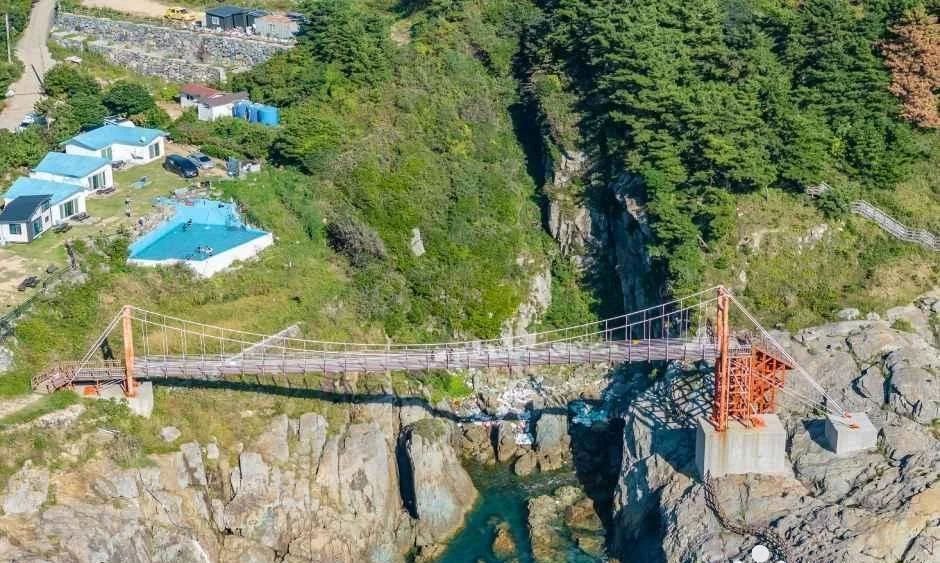
▲ 욕지도 출렁다리를 내려다본 항공 사진 ⓒ 한국관광공사 · 공공누리 제1유형
3. 예약·승선 규정 — 차량은 예약이 사실상 필수
영동해운 공식 공지는 주말·공휴일의 온라인 예약이 최소 1주일 전쯤 매진되고, 차량을 가져가는 경우 예약이 필수라고 안내한다. 매진된 시간대는 전화로 차량 여유를 물어볼 수 있다. 주말·공휴일 조기 마감 공지 바로가기
| 항목 | 내용 |
|---|---|
| 신분증 | 승선자 전원 지참 필수(아동·청소년은 의료보험증·주민등록등본 등으로 대체 가능). 당일 없으면 삼덕 매표소 옆 무인발급기로 등본 발급 가능 |
| 도착 시각 | 출항 30분 전까지 삼덕항 터미널 도착 |
| 발권 | 출항 10분 전까지 발권하지 않으면 가는 일정·오는 일정 모두 사용 불가 |
| 온라인 예약 | 출항 1일 전까지 가능. 예약 1건당 차량 1대(2대는 2건으로 나눠 예약) |
| 할인 | 온라인 예약 시 통영시민·도서민·국가유공자·장애인 할인 불가, 현장·전화 구매 때만 적용 |
| 환불 | 출항 전일 24시까지 100%, 당일 출항 10분 전까지 80%, 이후 50%. 출항 3일 이후 환불 불가. 왕복 예약은 나오는 편까지 같은 비율로 수수료가 공제됨 |
| 취소 방법 | 출항 전일 24시까지만 홈페이지에서 직접 취소. 당일 취소와 출항 후 2일 이내 취소는 070-8807-2542 또는 카카오톡 문의(매표소 취소 불가). 발권도 취소도 하지 않으면 수수료가 청구됨 |
| 일정 변경 | 예약 후 날짜·시간 직접 변경은 불가(기존 예약 취소 후 재예약). 출항 당일 시간 변경은 삼덕 매표소 전화로 문의하며 차량 여유가 있을 때만 가능(2021년 공지) |
| 전기차 | 충전율 50% 이상, 충돌 흔적, 사고 이력이 있으면 선적이 제한될 수 있음(해양수산부 「전기차량 해상운송 안전대책」 권고 근거, 2024년 8월 23일 공지) |
| 반려동물 | 전용 케이지에 넣은 경우에만 승선 가능(터미널에 별도 보관 장소 없음) |
| 기상 | 파도·안개·바람 등으로 출항 취소·지연 가능 |
| 문의 | 전화 055-643-8973 / 055-642-2542 / 055-642-2588, 온라인 예약 문의 070-8807-2542(고객센터 09:00~18:00, 2022년 공지 기준) |
여객선 규모는 공식 선박 소개에 나온다. 욕지영동크리스탈호는 598톤·여객 정원 650명·차량 51대(2025년 5월 진수), 욕지영동골드고속호는 549톤·559명·차량 45대(2011년 4월 진수)이고 속력은 둘 다 18노트다. 욕지영동고속호(422톤·466명·차량 35대)도 소개돼 있지만 현행 시간표에는 크리스탈호와 골드고속호만 배정돼 있다.
영동해운은 2025년 12월 10일 공지에서 모든 선박이 전진 주차가 가능하다고 밝혔다. 후진 주차가 부담스러운 운전자에게는 반가운 소식이다.
섬에 차를 싣는 세부 요령과 전기차 주의사항은 섬에 차 싣고 가기 전에 알아야 할 것 기사에도 정리해 두었다.
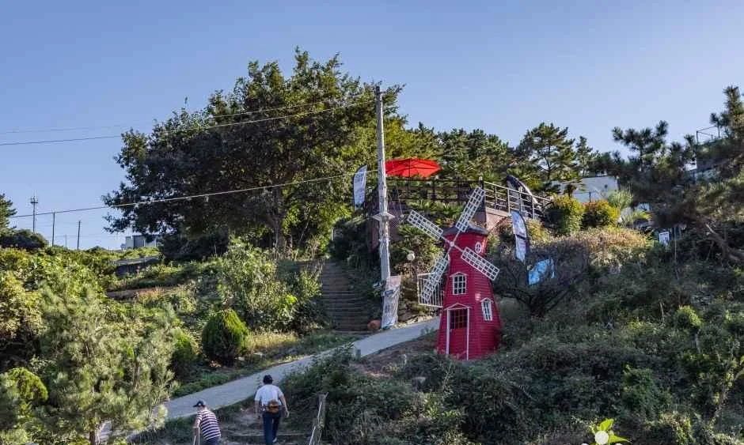
▲ 욕지도 출렁다리 인근 언덕의 붉은 풍차 ⓒ 한국관광공사 · 공공누리 제1유형
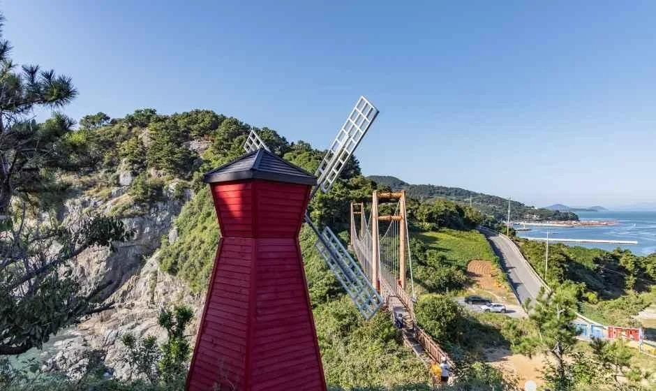
▲ 풍차 너머로 이어지는 출렁다리 구간(한국관광공사 출렁다리 사진 묶음, 촬영 시기 미표기) ⓒ 한국관광공사 · 공공누리 제1유형
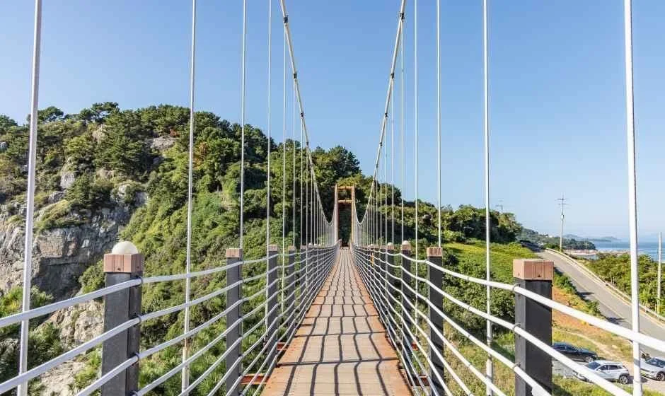
▲ 출렁다리 위에서 본 데크와 난간(한국관광공사 출렁다리 사진 묶음, 촬영 시기 미표기) ⓒ 한국관광공사 · 공공누리 제1유형
4. 섬 일주도로 드라이브 — 굽이가 많아 속도를 낮출 것
한국관광공사 정보에 따르면 욕지도는 자동차로 섬을 둘러볼 수 있게 일주도로가 정비돼 있다. 도로 정비는 잘돼 운전에 불편이 없지만 S자 굽이가 많아 주의가 필요하다고 안내한다. 일주도로 곳곳에서 욕지도 대표 여행지를 만난다.
일주도로 길이는 자료마다 다르다. 한국관광공사 여행기사(2021년 8월 작성)는 "욕지도 전체를 둘러싸고 있는 약 24km의 해안 일주도로"라고 적었고, 2018년 지역 일간지 보도는 약 17km로 소개했다. 두 수치 중 어느 쪽이 맞는지 지자체 공식 실측값으로는 확인하지 못했다.
관광공사 욕지도 소개에는 이 일주도로가 산악자전거와 섬 마라톤 코스, 주말·동계 훈련 코스로 알려졌다는 설명도 있다. 겨울에도 자전거·러너와 마주칠 수 있으니 굽이에서는 속도를 더 줄이는 편이 좋다.
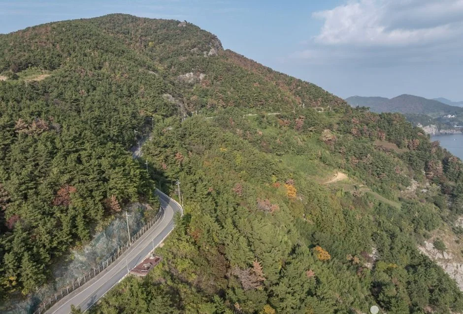
▲ 산비탈을 따라 굽이치는 욕지도 해안일주도로 ⓒ 한국관광공사 · 공공누리 제1유형
▲ 바다를 끼고 산자락을 도는 일주도로 ⓒ 한국관광공사 · 공공누리 제1유형
섬 안 주유소 유무와 급유 가능 여부는 통영시·관광공사·영동해운 어느 공식 자료에서도 확인하지 못했다. 욕지면사무소(055-650-3580)나 한국석유공사 오피넷으로 확인하기 전까지는 삼덕항 쪽에서 연료를 채우고 들어가는 편이 안전하다. 사진을 찍으려고 도로 한가운데 멈추지 말고 갓길이나 지정 장소를 이용하자.
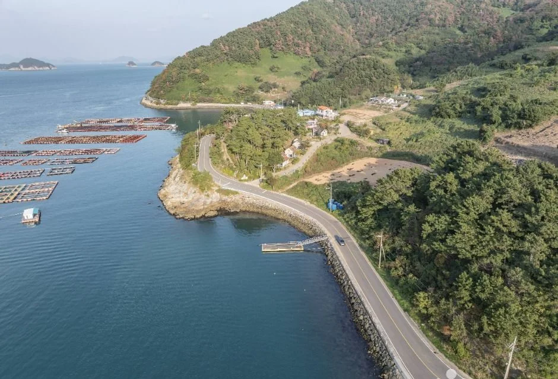
▲ 양식장이 보이는 해안을 따라 놓인 도로 ⓒ 한국관광공사 · 공공누리 제1유형
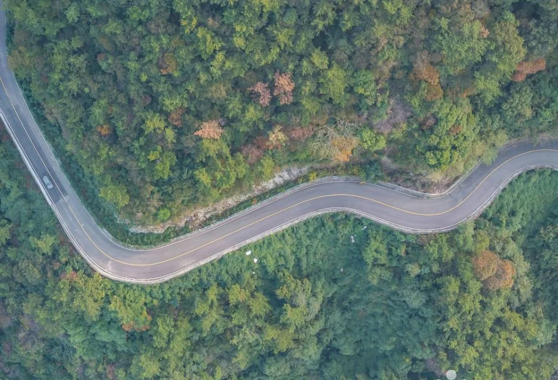
▲ 숲 사이를 휘감아 도는 도로 구간 ⓒ 한국관광공사 · 공공누리 제1유형
5. 주요 포인트 — 출렁다리·새천년기념공원·유동 몽돌해변
영동해운 공식 욕지도 소개는 관광명소로 출렁다리, 천황산, 해안 일주도로, 삼여 전망대, 새천년 기념공원, 한려해상 전망대, 해수욕장(흰작살·유동·덕동·도동), 새에덴동산 등을 든다. 같은 소개는 최고봉 천황산을 해발 392m로 적고, 1시간 30분부터 4시간 30분까지 걸리는 등산 코스가 4~5개 있다고 설명한다.
| 포인트 | 확인한 내용 | 출처·비고 |
|---|---|---|
| 욕지도 출렁다리 | 제1·2·3 출렁다리 총 3개. 제1은 펠리컨 머리를 닮은 바위 인근 목조 다리, 제2·3은 더 높은 곳. 상시 개방·연중무휴·주차 가능으로 안내. 문의 욕지면사무소 055-650-3580 | 한국관광공사 TourAPI(2026-01-20 수정) |
| 삼여도 전망대 | 절벽 위 전망대. 아래 삼여도는 바위가 작은 바위를 감싼 모양 | 영동해운 소개·2018년 경남매일 보도 |
| 새천년기념공원 | 욕지도 명소로 소개됨(한국관광공사 욕지도 소개: 삼여도·펠리칸 바위·새에덴 동산·새천년 기념공원). 해맞이 장소로 알려졌고 바다 전망이 좋다는 것은 2018년 보도 기준이며, 별도 '일출전망대' 시설·운영시간은 공식 자료에서 확인하지 못함 | 한국관광공사(2026-03-13 수정), 2018년 경남매일 보도 |
| 모밀잣밤나무 숲 | 천연기념물(1984년 11월 19일 지정, 18,584㎡). 동항리 산108-1 일대. 영동해운 소개는 욕지항에서 동촌·자부마을 해안도로 위쪽에 있고 입장료가 없으며 사시사철 볼 수 있다고 안내 | 국가유산포털(문화재청), 영동해운 욕지도 소개 |
| 유동해수욕장 | 몽돌 해변. 해수욕보다 산책과 발 담그기에 적합. 상시 개방·연중무휴·주차 불가로 안내. 해변 뒤 유동어촌체험마을이 선상낚시·건강망 그물체험·유어장 낚시 등을 운영한다고 소개됨 | 한국관광공사 TourAPI(2026-09-15 수정) |
| 천황산(392m) | 등산 코스 4~5개, 소요 1시간 30분~4시간 30분 | 영동해운 욕지도 소개 |
| 욕지도 모노레일 | 현재 임시휴장(다음 절 참고) | 모노레일 공식 예약 사이트 |
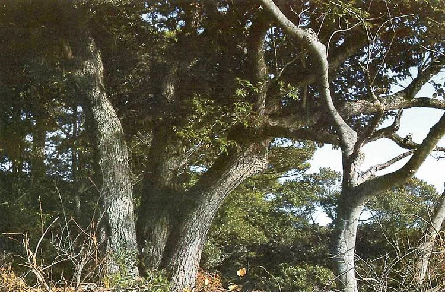
▲ 욕지도 모밀잣밤나무 숲(천연기념물, 촬영 시기 미표기) ⓒ 국가유산청(문화재청) · 공공누리 제1유형, 위키미디어 공용 경유
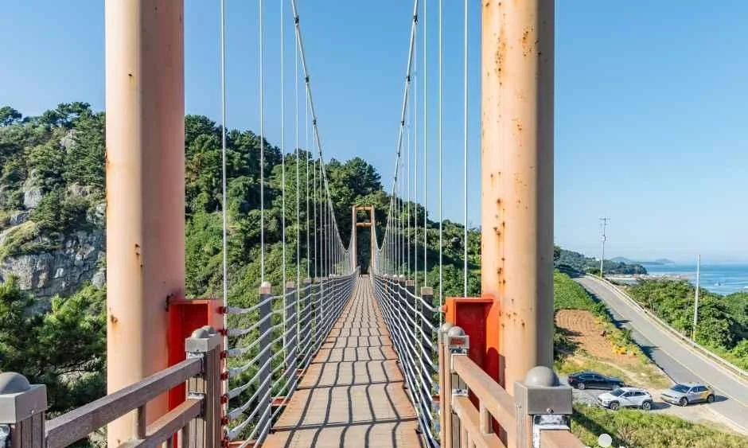
▲ 욕지도 출렁다리의 나무 데크 ⓒ 한국관광공사 · 공공누리 제1유형
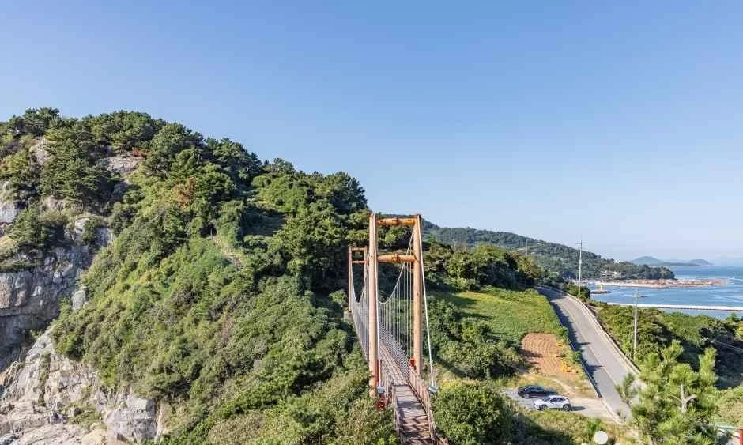
▲ 능선 사이에 걸린 출렁다리 ⓒ 한국관광공사 · 공공누리 제1유형
한국관광공사 정보는 유동해수욕장 주차를 "불가능"으로 안내하고, 유동마을에서 해변으로 나와 좁은 계단을 내려가면 몽돌 해변이라고 설명한다. 차를 어디에 세울지는 공식 자료에 없으니 현지 표지와 마을 안내를 따르자. 몽돌이 미끄러우니 운동화를 신는 편이 낫다.
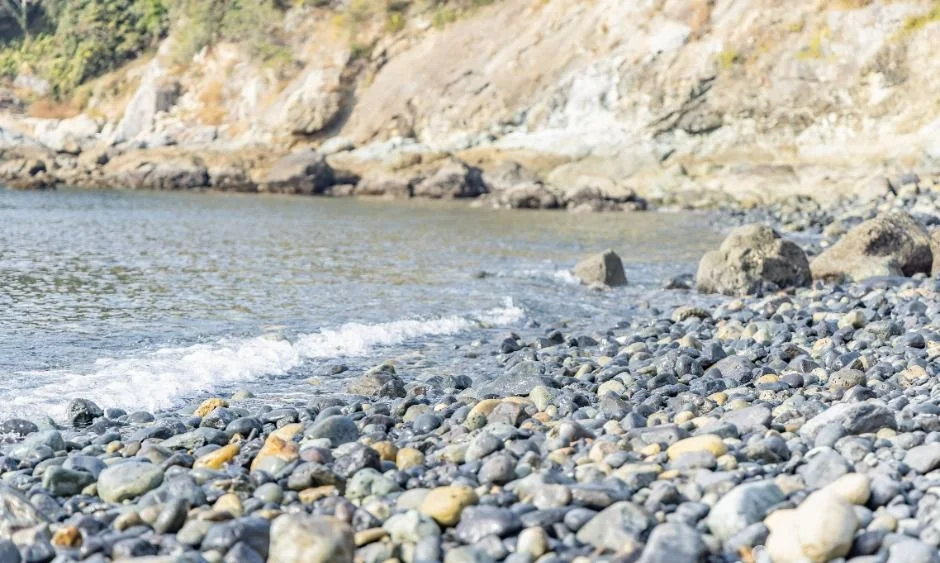
▲ 유동해수욕장 몽돌 해변 ⓒ 한국관광공사 · 공공누리 제1유형
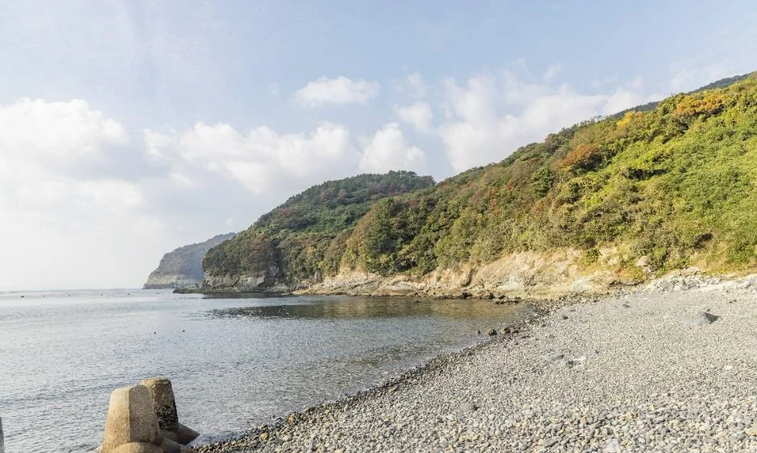
▲ 유동 일대의 자갈 해변과 해안 언덕 ⓒ 한국관광공사 · 공공누리 제1유형
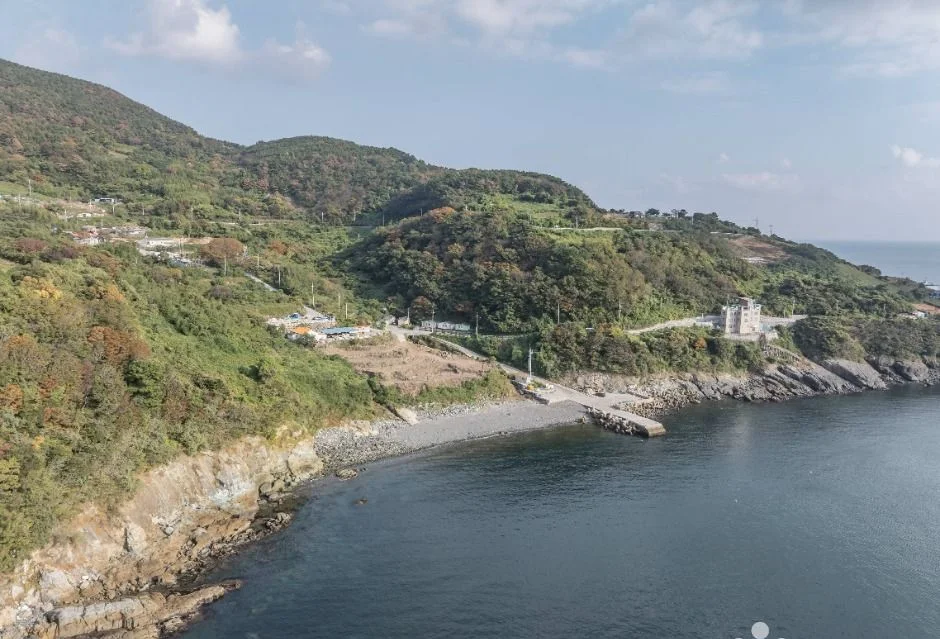
▲ 유동해수욕장 사진 묶음에 실린 해안 항공 사진(암석 해안과 작은 선착장, 촬영 시기 미표기) ⓒ 한국관광공사 · 공공누리 제1유형
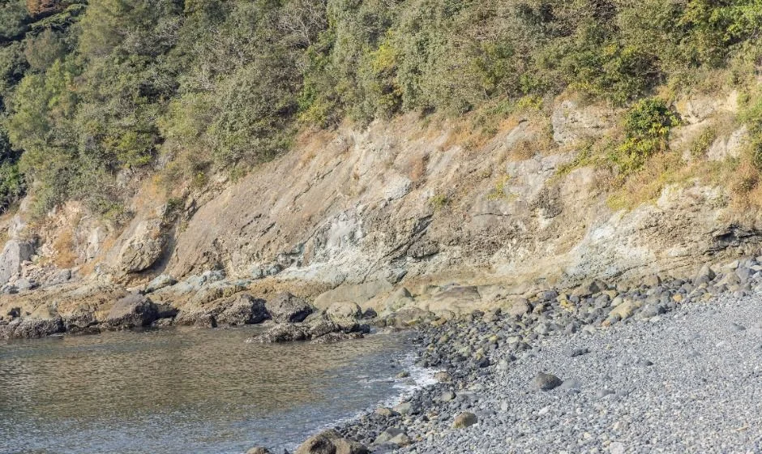
▲ 절벽 아래 자갈이 깔린 유동 해안(한국관광공사 유동해수욕장 사진 묶음) ⓒ 한국관광공사 · 공공누리 제1유형
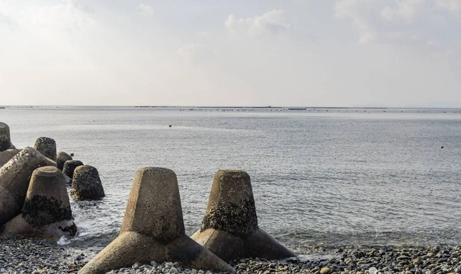
▲ 자갈 해변과 테트라포드 너머의 바다(한국관광공사 유동해수욕장 사진 묶음) ⓒ 한국관광공사 · 공공누리 제1유형
6. 모노레일은 지금 못 탄다 — 임시휴장 상태
욕지도 모노레일은 2019년 12월 14일 개장해 왕복 2.1km 구간으로 운영됐다. 그러나 2026년 10월 17일 확인한 모노레일 공식 예약 사이트 첫 화면에는 "별도 공지시까지 임시휴장"이라는 안내가 올라 있다. 같은 첫 화면의 공지 목록은 2021년 7월 27일자가 가장 최근이라 갱신이 멈춘 상태다. 모노레일 공식 예약 사이트 바로가기
2024년 7월 한산신문 보도에 따르면 2021년 11월 운행 중 탈선 사고로 8명이 크게 다친 뒤 운행이 중단됐고, 통영시는 철거 대신 재개장을 택해 2023년 5월 추경으로 수리비 47억 원을 확보했다. 사이트에는 성인 왕복 15,000원과 동절기 운행 시간표가 남아 있지만, 지금은 해당되지 않는다.
가장 최근 보도는 KNN의 2026년 3월 12일 기사다. 이 기사에 따르면 117억여 원을 들여 2019년 개통한 모노레일은 2021년 탈선사고 뒤 5년 넘게 멈춰 있고, 사고 열차도 증거 보존을 이유로 그대로 놓여 있다. 운영 주체인 통영관광개발공사는 시공사를 상대로 재시공 비용 등 약 100억 원을 청구하는 소송을 냈는데, 올해 초 1심은 29억 원만 인정했고 양측이 모두 항소한 상태라고 한다.
공사 측은 기존 시설로는 안전을 보장할 수 없어 다시 설치하는 방향이라고 밝혔지만, 소송이 끝나도 재시공이 필요해 정상 운영 시점은 기약이 없다. 앞서 2024년 7월 한산신문은 통영시가 보수공사비 47억 원을 공사에 전출했다고 전했다. 재개 일정은 공식 자료에서 확인하지 못했다.
⚠️ 일정 짤 때 유의
· 모노레일을 목적으로 욕지도에 가는 일정은 지금 성립하지 않는다.
· 천황산 정상 쪽 전망은 모노레일 대신 등산 코스(공식 소개상 1시간 30분~4시간 30분)로 대체해야 한다.
· 재개 소식은 모노레일 공식 사이트(전화 1544-3303, 내선 2번)에서 가장 먼저 확인할 수 있다.
7. 고구마·식당·숙박 — 확인된 곳만 정리
욕지도의 지역 특산물은 고구마다. 한국관광공사 소개는 비탈진 황토밭에서 해풍을 맞고 자라 맛있다고 설명하고, 섬에서는 고구마를 "욕지 고매"라 부른다고 적었다. 영동해운 욕지도 소개도 고구마를 지역 특산물로 꼽는다.
빼떼기죽은 겨울과 잘 어울리는 음식이다. 관광공사 설명에 따르면 빼떼기는 추운 날씨에 쉽게 썩는 고구마를 겨우내 먹으려고 판자처럼 썰어 말린 것이고, 여기에 팥·좁쌀·강낭콩 등을 넣고 쑨 죽이 빼떼기죽이다.
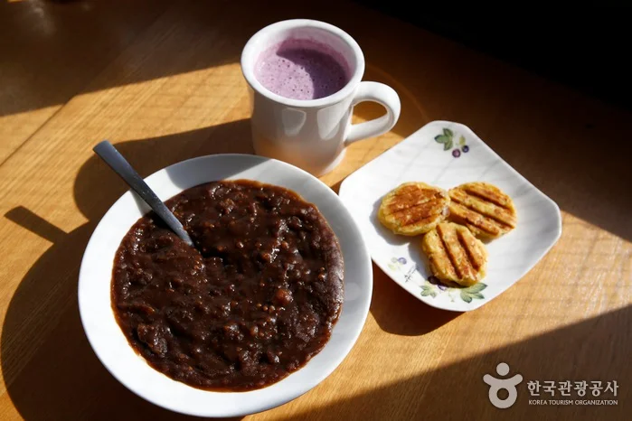
▲ 빼떼기죽과 고구마 간식(한국관광공사 "겨울 입맛 돋우는 별미 따라 욕지도 한 바퀴" 기사 사진, 촬영 시기 미표기) ⓒ 한국관광공사 · 원본 그대로 사용(변경금지)
| 이름 | 확인한 내용 | 문의 |
|---|---|---|
| 욕지도 할매바리스타(카페) (정보 수정 2026-02-26) | 고구마라떼·빼떼기죽 등. 평일 08:30~17:00, 주말 08:30~19:00, 연중무휴, 카드·주차 가능 | 055-645-8121 |
| 욕지도늘푸른회센타(식당) (정보 수정 2025-03-17) | 고등어회가 대표(고등어구이·자연산 활어회·회덮밥·성게미역해장국·매운탕 등 취급). 11:00~20:00, 연중무휴, 전화 예약 가능, 주차 가능 | 055-642-6777 |
| 욕지도펜션블루씨(숙박) (정보 수정 2026-10-01) | 체크인 15:00, 체크아웃 11:00, 야외수영장·바베큐장, 주차 가능 | 010-6211-8014 |
| 욕지하늘마루펜션(숙박) (정보 수정 2026-02-20) | 8실, 체크인 14:00, 체크아웃 11:00, 주차 가능 | 010-8810-5040 |
| 욕지도관광농원 오션뷰카라반(숙박) (정보 수정 2026-09-08) | 카라반 숙박(4인 소형 6동, 5인 대형 3동, 난방 가능으로 소개). 입실 15:00~20:00, 퇴실 11:00, 연중무휴 | 02-553-7090 |
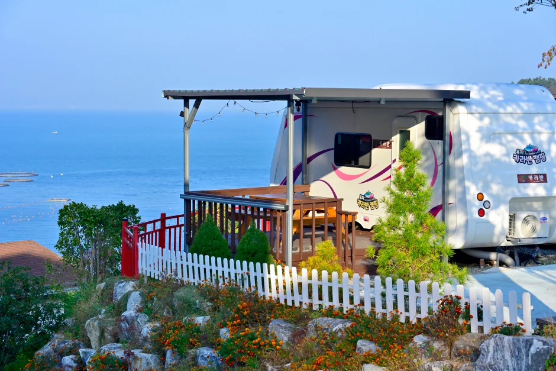
▲ 욕지도관광농원 카라반 외관(한국관광공사 등록 사진, 촬영 시기 미표기) ⓒ 한국관광공사 · 원본 그대로 사용(변경금지)
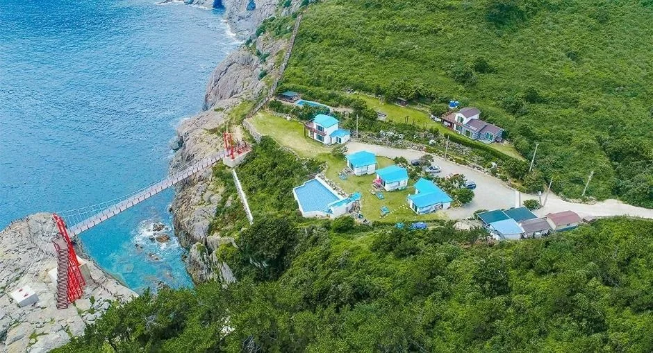
▲ 욕지도펜션블루씨 외관(한국관광공사 등록 사진, 촬영 시기 미표기) ⓒ 한국관광공사 · 원본 그대로 사용(변경금지)
숙소 객실 요금은 관광공사 자료에 없어 확인하지 못했다. 막배 시간(욕지 16:35 출발)이 이르기 때문에 1박을 계획한다면 식당 영업시간에 맞춰 저녁 식사가 가능한지 전화로 확인하자. 위 영업시간은 관광공사 등록 정보라 현지 사정으로 달라질 수 있다.
8. 섬 안 이동수단·겨울철 운항 — 확인 못 한 부분 정리
이 부분은 공식 자료로 확인하지 못한 내용이 많다. 통영시나 욕지면 공식 누리집에서 현재 시점의 마을버스 시간표는 찾지 못했다. 한국관광공사 여행기사(2020년 1월 갱신)는 해안일주도로를 도는 마을버스가 "단돈 1,000원"이고 통영에서 오는 배 시간에 맞춰 하루 6회 운행한다고 소개했다. 2021년 6월 게시된 한 민박집 안내도 요금 1,000원, 한 바퀴 약 50분으로 적었다.
모두 몇 해 전 자료라 지금 노선과 횟수가 같은지는 알 수 없다. 2018년 경남매일 보도는 버스가 배 도착 시간에 맞춰 일부 구간만 다니고 택시는 없다고 전했다. 렌터카·전동카·스쿠터 대여 업체는 공식 안내를 찾지 못했다.
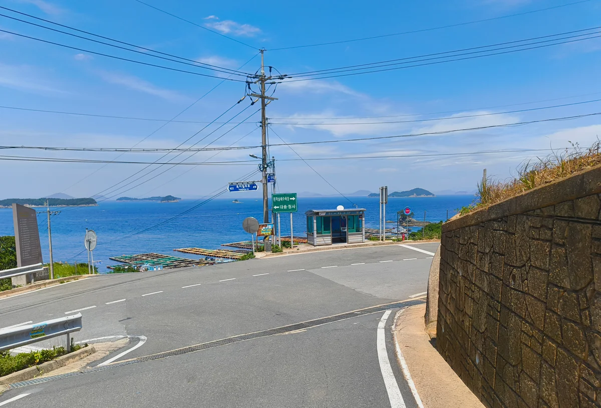
▲ 욕지도 해안도로 변의 버스 정류장(2025년 7월 12일 촬영, 여름 사진) ⓒ Pranay chakraborty · CC BY 4.0 · 위키미디어 공용
| 항목 | 상태 |
|---|---|
| 자가용 선적 | 공식 확인(영동해운 차량요금표·선박 소개). 가장 확실한 이동 방법 |
| 섬 안 마을버스 | 한국관광공사 2020년·민박 2021년 안내(1,000원, 하루 6회, 한 바퀴 약 50분) 외 최신 공식 시간표 미확인 |
| 택시 | 2018년 보도에 '없음'으로 기술, 현재 미확인 |
| 렌터카·전동카 | 공식 자료 미확인(욕지면사무소 055-650-3580 등 현지 문의 필요) |
| 섬 안 주유소 | 공식 자료 미확인 |
| 겨울철 운항 변경 | 공식 사이트(2026-10-17 확인)에 겨울 시간표는 없고, '기상상황으로 출항 취소·지연 가능'과 '특별수송기간 시간 변경' 문구만 확인. 결항 통계는 공개 자료 못 찾음 |
| 모노레일 | 임시휴장(2026년 3월 보도 기준 재개 시점 기약 없음) |
겨울에는 파도와 바람 때문에 결항이나 지연이 늘 수 있다. 다만 공식 안내가 말하는 기상 취소 가능성은 계절과 무관한 일반 문구이고, 결항 통계는 공개 자료에서 찾지 못했다. 마지막 배가 17:30에 삼덕항에 도착하는 만큼, 결항이 걱정되는 날에는 막배보다 한 편 앞선 배로 나오도록 시간을 잡는 편이 안전하다.
통영에서 다른 코스를 함께 짜려면 통영·거제 하루 코스 주차 기사와 통영 스카이라인 루지 기사를 참고하자.
✅ 출발 전 체크리스트
· 삼덕항(영동해운) 첫 배 06:45, 욕지 막배 16:35 — 시간표는 특별수송기간에 바뀜
· 승선자 전원 신분증, 출항 30분 전 도착, 출항 10분 전까지 발권
· 어른 왕복 17,200원, 승용차 편도 25,000원, 경차 21,000원
· 주말·공휴일 온라인 예약은 약 1주일 전 매진 가능, 차량은 예약 필수
· 전기차는 충전율 50% 이상이면 선적 제한 가능
· 모노레일은 임시휴장, 섬 안 버스·렌터카는 미확인
9. 정리
2026년 10월 17일 기준, 삼덕항에서 욕지도는 55분, 어른 편도 8,600원, 승용차 편도 25,000원이다. 어른 2명과 승용차 1대의 왕복 비용은 공식 요금표로 계산하면 84,400원이다.
모노레일은 임시휴장이고 2026년 3월 보도에서도 재개 시점은 기약이 없어 일정에서 빼야 한다. 섬 안 버스 최신 시간표·렌터카·전동카·주유소·겨울철 결항 통계는 공식 자료로 확인하지 못했다. 출발 전 영동해운(055-643-8973 등)과 공식 누리집에서 시간표와 예약 상황을 한 번 더 확인하자.